Unofficial study solution; not an official GTU answer key. Answers have not been independently verified. English text reflows; source equations, diagrams and Gujarati retain their original appearance. Use Enlarge image to inspect them.
આ બિનસત્તાવાર અભ્યાસ ઉકેલ છે, સત્તાવાર GTU જવાબવહી નથી. PDF માંથી ગુજરાતી લખાણ સાચું નીકળતું નથી, તેથી દરેક જવાબ મૂળ ચિત્રરૂપે જાળવ્યો છે. વાંચવા માટે ચિત્ર મોટું કરો. મૂળ પ્રશ્ન અને પરીક્ષાના વિકલ્પોની સૂચનાઓ અનુસરો.
Coverage: all 28 printed parts, including every OR alternative, are answered in English and easy Gujarati. The paper is 70 marks; OR alternatives do not add marks.
Questions: the English paper is authentic. Its questions are reproduced with line breaks normalised and table data flattened in row order; the Gujarati question meanings are study aids, not official translations.
Assumptions: horizontal distances and vertical staffs are stated where used; diagrams are schematic. Q3(c) does not specify the tower arrangement, so two consistent answers are shown. Q4(b) uses the printed 150° angle.
Status: unofficial study support, not an official GTU answer key. The original question paper is kept unchanged as a separate PDF.
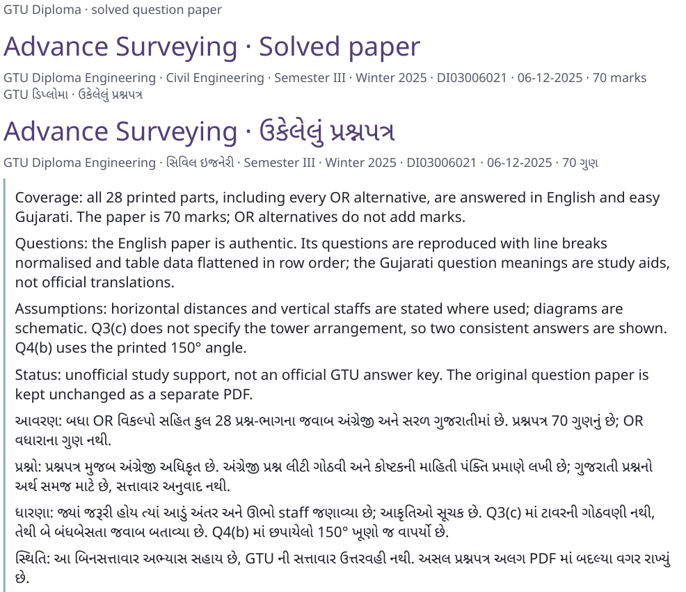
Question 1
Q1 · Theodolite and line extension
Q.1 (a) · Define following term related to theodolite. (1) Swinging of telescope. (2) Axis of level tube. (3) Azimuth axis. · 3 marks
The following terms describe the motion and reference axes of a theodolite:
1. Swinging the telescope: rotating the telescope in the horizontal plane about the vertical axis, to point in another direction.
2. Axis of a level tube: the tangent to the longitudinal bubble tube at the centre of its upper surface; it is horizontal when the bubble is centred.
3. Azimuth axis: the vertical axis about which the instrument and telescope rotate horizontally. It should be vertical after levelling.
Example: swing from target A to target B to measure their horizontal angle. Swinging is not transiting, which rotates the telescope in a vertical plane.
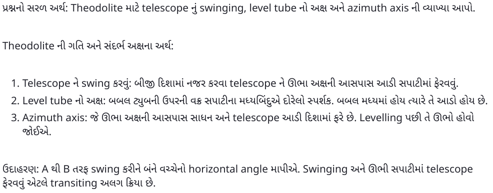
Q.1 (b) · Draw a neat sketch of theodolite and show its components. · 4 marks
A transit theodolite measures horizontal and vertical angles; its telescope can be turned through 180° in the vertical plane.
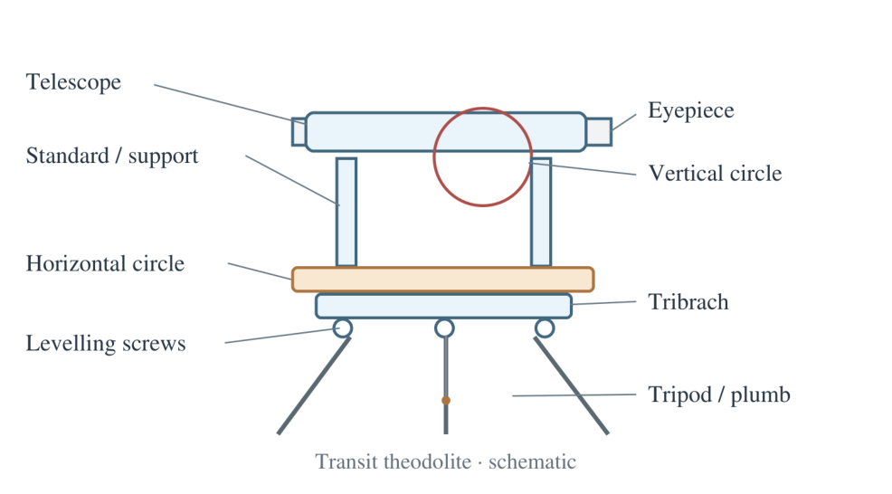
Schematic only; point to the labelled telescope, vertical circle, standards, horizontal circle, screws, tribrach and tripod.
• Telescope and eyepiece: sight and focus the target; cross-hairs define the line of sight.
• Vertical circle: reads vertical angle; horizontal circle: reads horizontal direction and angle.
• Standards: support the telescope; levelling screws and tribrach: make the vertical axis upright.
• Tripod and plumb: support and centre the instrument over the station.
Use and limit: for example measure the angle between two survey lines. Precise centring, levelling and focusing are still essential.
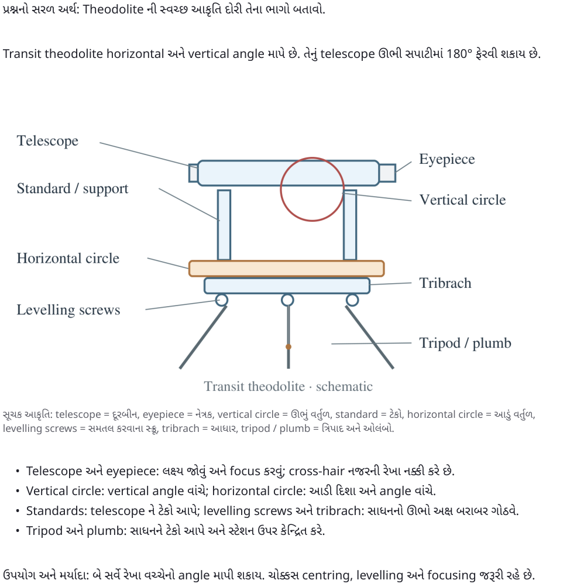
Q.1 (c) · List out the methods of measurement of horizontal angle by theodolite and discuss repetition method. · 7 marks
A horizontal angle is the angle between two directions in a horizontal plane. Common theodolite methods are ordinary (direct), repetition and reiteration. Repetition adds the same angle several times before dividing, reducing the effect of individual reading errors.
Setup — parts and purpose
• Centre and level the theodolite at O, focus the eyepiece and targets A and B to remove parallax.
• The lower clamp and tangent screw align the circle and telescope together; the upper clamp and tangent screw turn the telescope relative to the circle. Use the instrument’s applicable controls.
Working — repeated angle AOB
1. Set or record the initial horizontal-circle reading; sight A accurately with the lower motion and clamp it.
2. Release the upper motion, turn to B, clamp and bisect B. Record the first accumulated reading.
3. Keep the upper setting fixed, release the lower motion and return to A. Clamp and bisect A: the accumulated circle reading is retained.
4. Release the upper motion and turn to B again; the circle now contains two angles. Repeat until n repetitions are accumulated, recording complete 360° turns if the reading wraps.
5. Unwrap the final reading, subtract the starting reading and divide by n: θ =
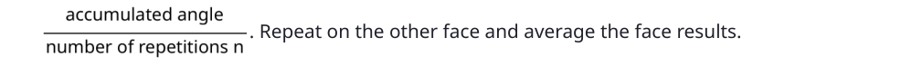
Illustrative check
n = 3 repetitions
Accumulated angle after subtracting the start = 96°31′00″
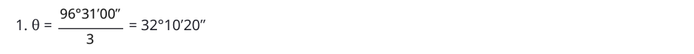
Check closure and repeat observations. Repetition does not remove every systematic error, poor centring or parallax.
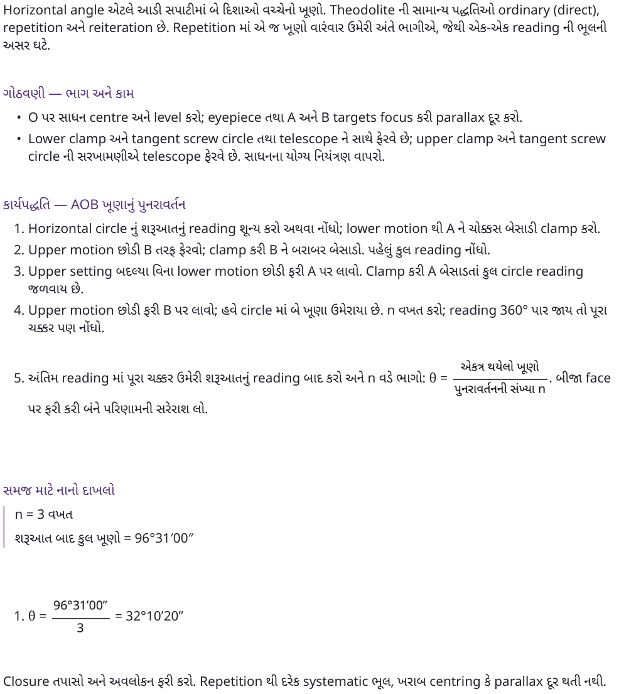
Q.1 (c) · Explain step by step procedure to extend a line with theodolite. · OR · 7 marks
Extending a line means locating a new point C beyond B in the direction of the existing line AB. Two- face observations help reduce collimation error.
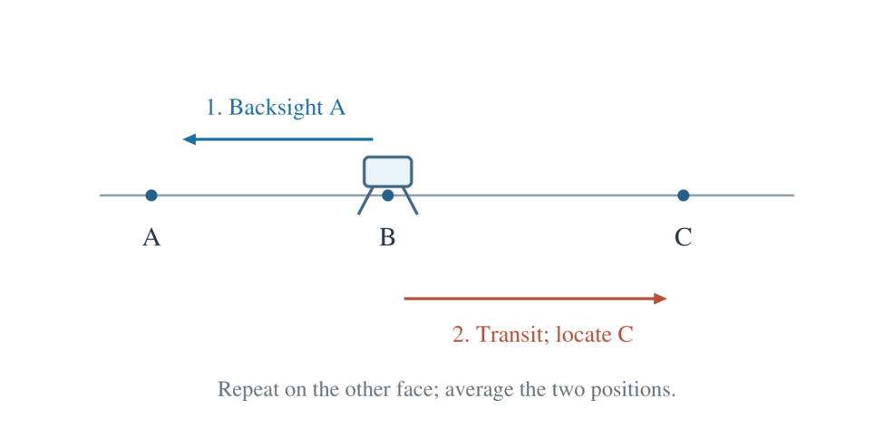
Schematic line AB extended beyond B to C; positions from both faces are averaged.
Setup — part and purpose
• Tripod, plumb and foot screws place the theodolite at B, centred and level.
• Telescope, cross-hair and clamps provide the backsight and forward sight; ranging rods mark A and C.
Working — step and reason
1. Set the theodolite over B, centre, level and eliminate parallax. Place a clear target on A.
2. On the first face, accurately bisect A with the horizontal clamp and tangent screw.
3. Without releasing the horizontal setting, transit the telescope through 180° in the vertical plane. Guide an assistant onto the sight line beyond B and mark C₁.
4. Turn the instrument 180° horizontally; on the other face sight and bisect A again. Transit again and mark C₂ at approximately the same distance.
5. Take the midpoint of C₁ and C₂ as C; their small separation shows the face discrepancy. Check the extended line with an additional observation.
Application: prolong a road-centre line across open ground. A and the new point must be visible; repeat if C₁ and C₂ differ excessively, and work safely near traffic or edges.
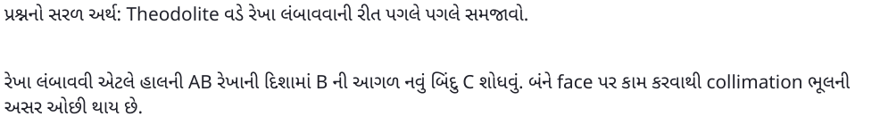
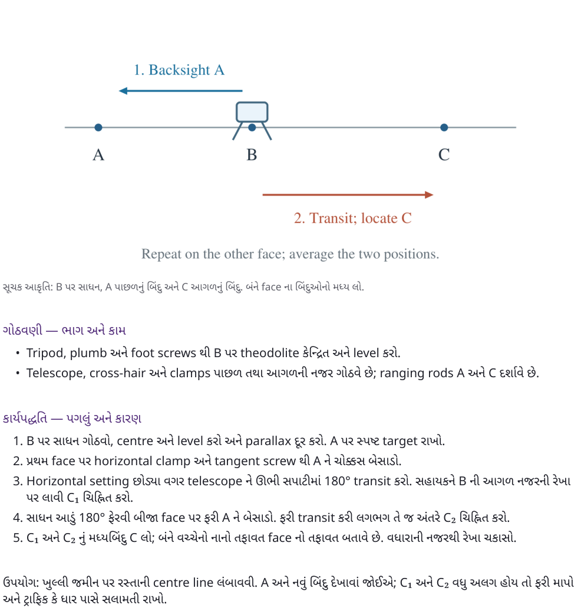
Question 2
Q2 · Tacheometry and reciprocal levelling
Q.2 (a) · Enlist the advantages and limitations of tacheometry. · 3 marks
Tacheometry determines horizontal distance and differences in elevation optically from staff readings and angles, generally without chaining the whole distance.
• Advantages: rapid for contours and detail; useful on steep, rough or obstacle-filled terrain; distance and height can be found together.
• Limitations: needs a clear line of sight and careful vertical staff; optical reading and weather limit accuracy; generally less precise than careful chaining or precise levelling.
Example: map contours on a hillside without measuring every slope by tape.
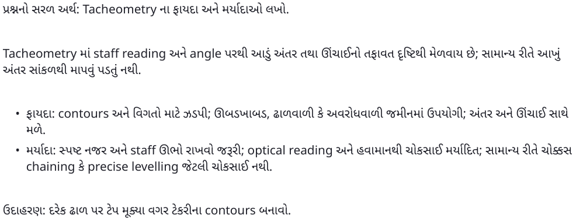
Q.2 (b) · Determine the constant of a tacheometer from the following data. The distance of Q is 110 m and point R is 220 m from station P. Inst. Staff. St. Staff reading Top Bottom P Q 2.550 1.450 R 3.550 1.345 · 4 marks
For a horizontal sight to a vertical staff, D = K s + C, where s is the upper minus lower reading.
Given and assumption
DQ = 110 m; upper = 2.550 m; lower = 1.450 m
DR = 220 m; upper = 3.550 m; lower = 1.345 m
Assume both measured distances are horizontal and the same instrument is used.
Step-by-step solution
1. sQ = 2.550 − 1.450 = 1.100 m
2. sR = 3.550 − 1.345 = 2.205 m
3. 110 m = K × 1.100 m + C
4. 220 m = K × 2.205 m + C
5. Subtract: 110 m = K × 1.105 m
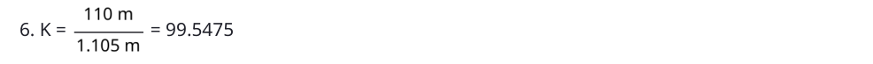
7. C = 110 m − 99.5475 × 1.100 m = 0.4977 m
Multiplying constant K ≈ 99.548; additive constant C ≈ 0.498 m
Check: K × 2.205 m + C ≈ 220.000 m; K has no unit and C has unit m. The result depends on the stated horizontal-sight assumption.
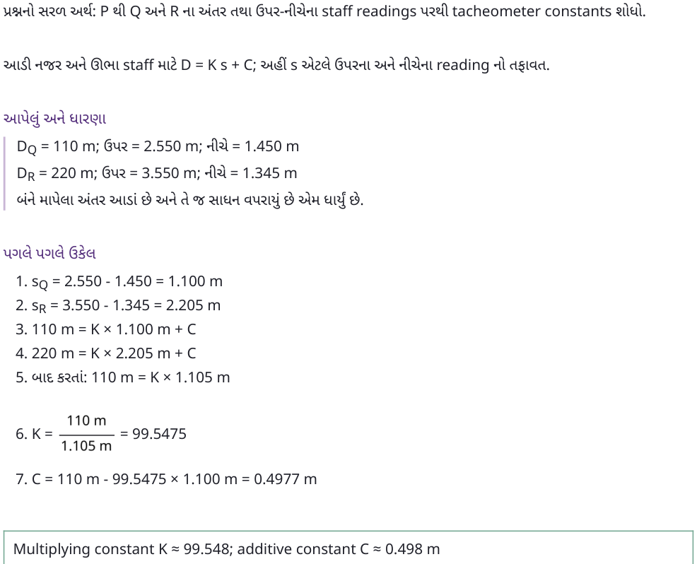
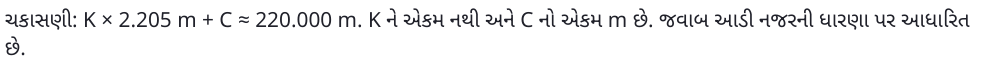
Q.2 (c) · Discuss on methods of tacheometry survey. · 7 marks
Tacheometric surveying obtains distance and elevation optically when direct measurement is inconvenient. Its main methods are stadia and tangential; stadia has fixed-hair and movable-hair forms.
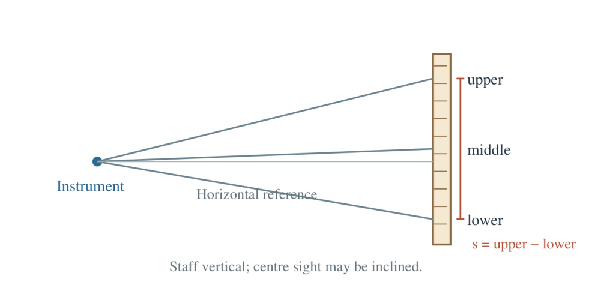
Stadia arrangement: s is the difference between the upper and lower readings. The middle sight can be horizontal or inclined.
Construction — part and purpose
• Tacheometer and telescope: observe vertical angle and staff; stadia hairs are above and below the central cross-hair.
• Levelling staff: held vertical at the target to provide readings. On a movable-hair instrument the stadia-hair separation can be changed; in fixed-hair work it stays fixed.
Working — methods
1. Set up, centre and level; focus carefully and hold the staff vertical. In fixed-hair stadia, read upper, middle and lower hairs and the angle. For a horizontal sight, s = upper − lower and D = K s + C. The middle reading relates the sight to the staff-station RL.
2. In movable-hair stadia, adjust the hair spacing i until the hairs span a chosen, known staff
spacing i. The spacing is read from the instrument.
3. In the tangential method, sight two known marks on a vertical staff with vertical angles α
Comparison and example
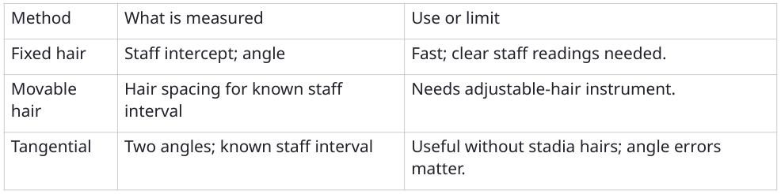
Care: distinguish horizontal from inclined-sight formulae, keep the staff vertical and use the instrument’s calibrated K and C. Long sights, refraction and poor visibility reduce accuracy.
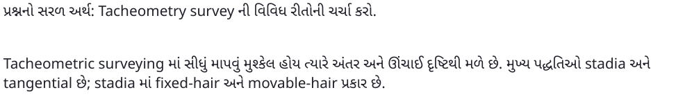
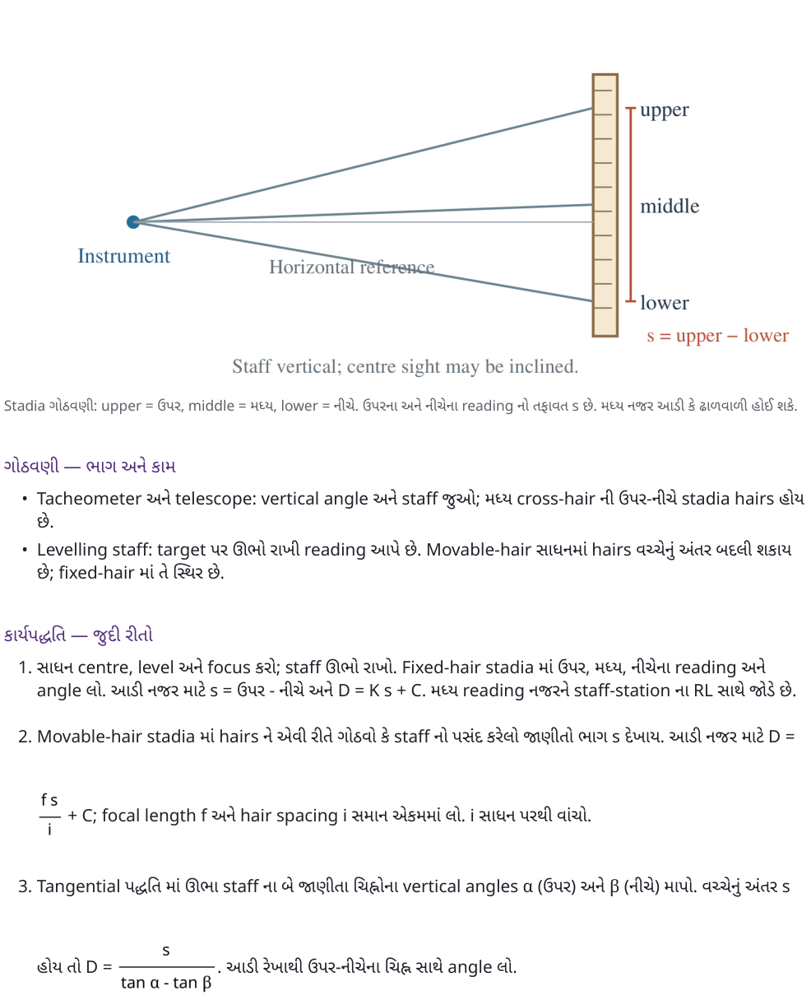
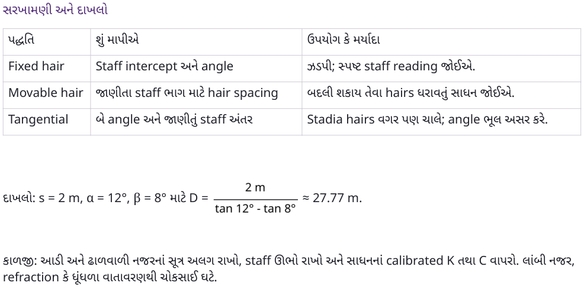
Q.2 (a) · State and Explain the principle of tacheometry. · OR · 3 marks
The stadia principle of tacheometry is that the interval s intercepted on a staff by two fixed hairs subtends a constant small angle at the instrument; with a fixed optical system, distance increases linearly with that interval, allowing for the additive constant.
• For horizontal sight to a vertical staff, D = K s + C.
• K is the multiplying constant and C is the additive constant.
• Measure top and bottom readings, find s, then calculate D.
Example: if K = 100, C = 0 and s = 1.5 m, the horizontal distance is 150 m.
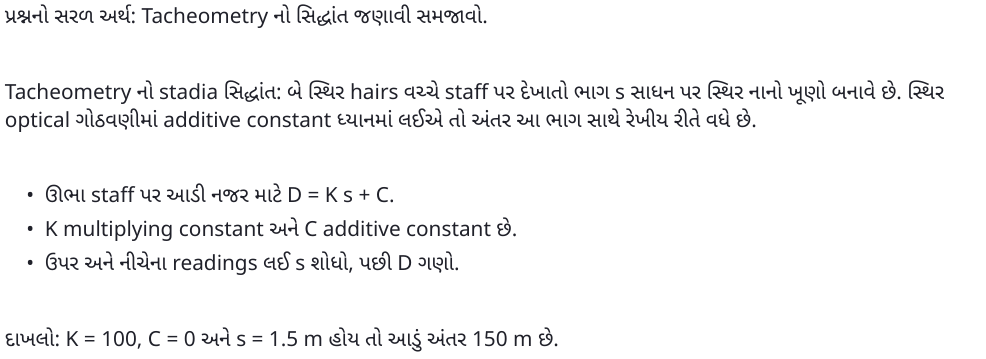
Q.2 (b) · Define Tacheometry.How to determine the co-efficient for stadia constants K and C in the field. · OR · 4 marks
Tacheometry finds distance and elevation from optical staff readings and angles. The stadia constants K and C are calibrated in the field using measured distances.
Procedure and formula
1. Set up and level the instrument. Choose at least two known horizontal distances D₁ and D₂ on fairly level ground.
2. Hold the staff vertical at each point; with a horizontal sight measure intercepts s₁ and s₂.
4. Use several distances and check a further observation or fit the best straight line D = Ks + C; repeat if readings disagree.
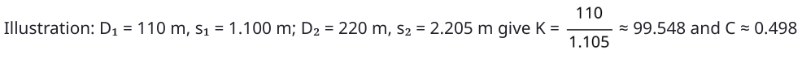
m.
Limit: a small separation between s₁ and s₂ magnifies reading error; use well-spaced stations and precise horizontal distances.
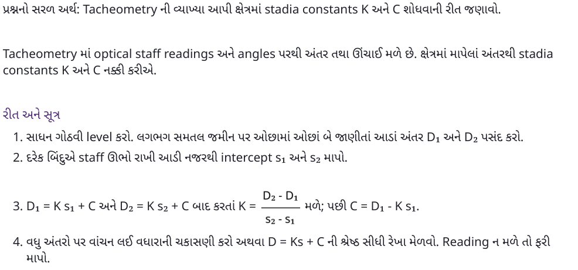
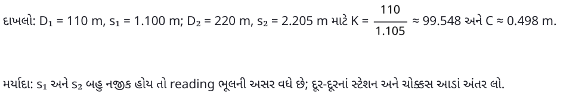
Q.2 (c) · Explain reciprocal method of Trigonometrical levelling. · OR · 7 marks
Reciprocal trigonometric levelling measures vertical angles in opposite directions across an obstacle and combines both estimates of the height difference. Similar curvature and refraction effects largely cancel when the observations are near-simultaneous.
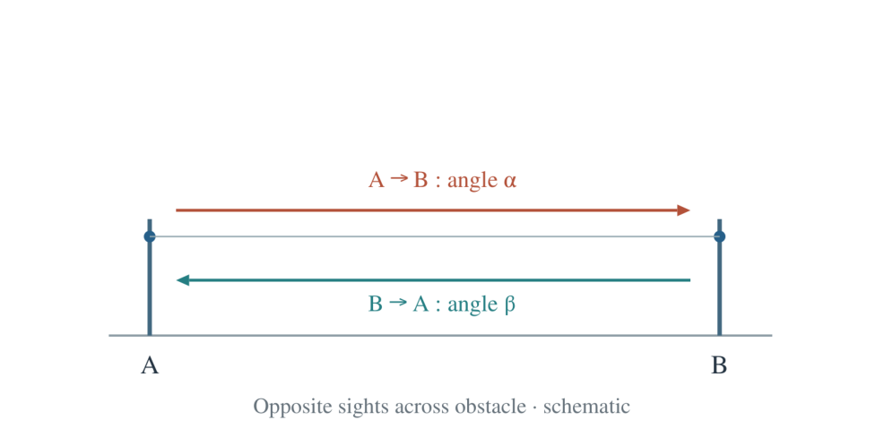
A and B are stations across an obstacle; α is observed from A to B and β from B to A. Angles are signed from the horizontal.
Setup — parts and purpose
• At A and B establish stable stations, known horizontal separation D and sightable targets.
• Measure instrument-axis heights iA, iB and target heights tA, tB above their respective stations. Observe vertical angles on both faces.
Working — step and reason
1. From A, sight the target at B and measure signed angle α. The first estimate of Δ = RL(B) − RL(A) is Δ₁ = iA + D tan α − tB.
2. From B, sight the target at A and measure signed angle β. The reversed estimate is Δ₂ = tA − iB − D tan β.
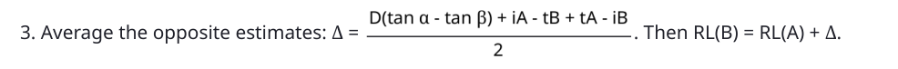
4. Take reciprocal readings close in time and use the same sight length so comparable refraction and curvature biases oppose in the two estimates. Check by repetition.
Illustrative example
D = 100 m; α = +3°; β = −2°
iA = iB = tA = tB = 1.5 m; RL(A) = 100.000 m
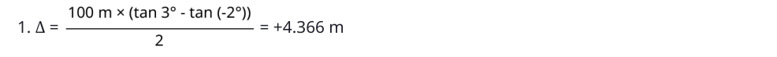
2. RL(B) = 100.000 m + 4.366 m = 104.366 m
RL(B) ≈ 104.366 m for this illustration
Check and limitations: positive Δ means B is higher. Both directions must be intervisible; unequal or changing refraction leaves residual error. For long lines, use appropriate geodetic reductions.
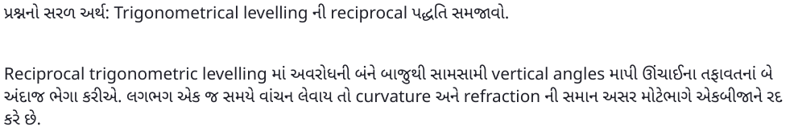
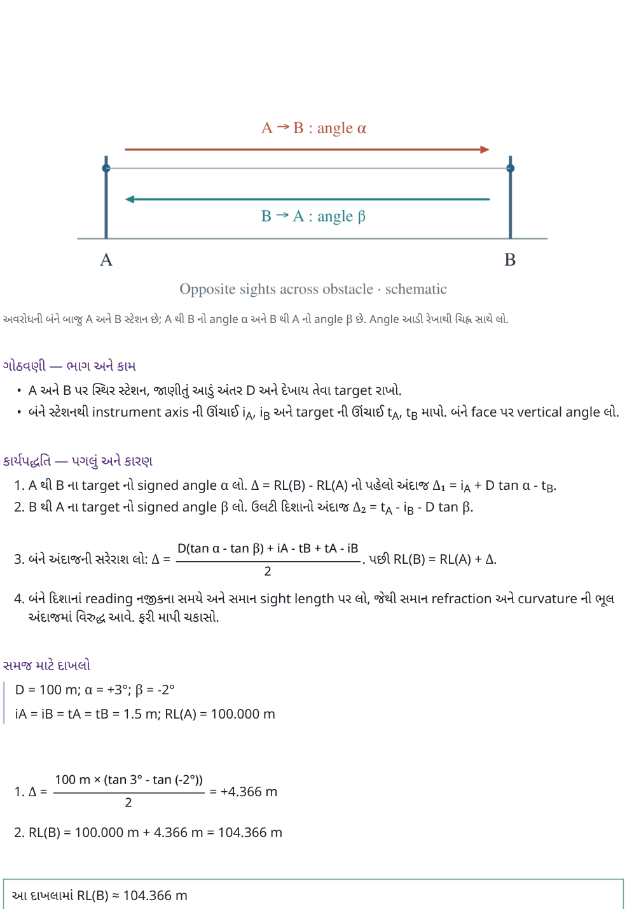
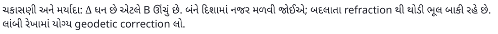
Question 3
Q3 · Trigonometric and tacheometric heighting
Q.3 (a) · Define Trigonometrical Levelling and describe it. · 3 marks
Trigonometric levelling determines an elevation difference from a vertical angle and a horizontal distance using trigonometry, rather than relying only on a horizontal level sight.
• Set up and level a theodolite; measure the instrument height and sight the target.
• For an accessible base at horizontal distance D and elevation angle α, the rise from the axis is D tan α.
• Add the rise and instrument height to the station RL; correct for target height if applicable.
Example: the RL of a tower top can be found from a measured baseline and vertical angle.
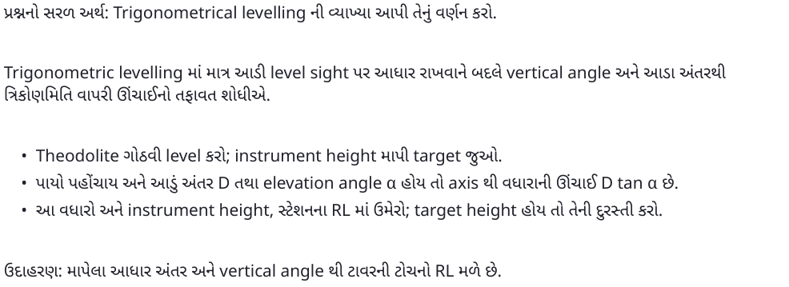
Q.3 (b) · Draw any two sketches for different methods of trigonometric levelling and write equations. · 4 marks
In trigonometric levelling, a measured vertical angle relates a horizontal distance to the rise from the instrument axis. Two cases are:
1. Base accessible
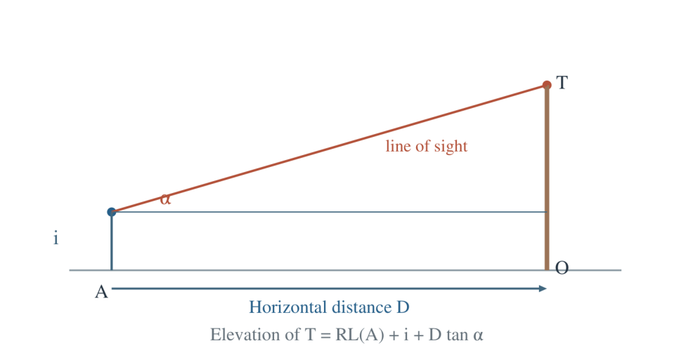
A is the instrument station, O the accessible foot, T the top; i is instrument height and α the elevation angle.
Equation: RL(T) = RL(A) + i + D tan α. D is the horizontal distance AO; this sights the actual top.
2. Base inaccessible, stations on the same side
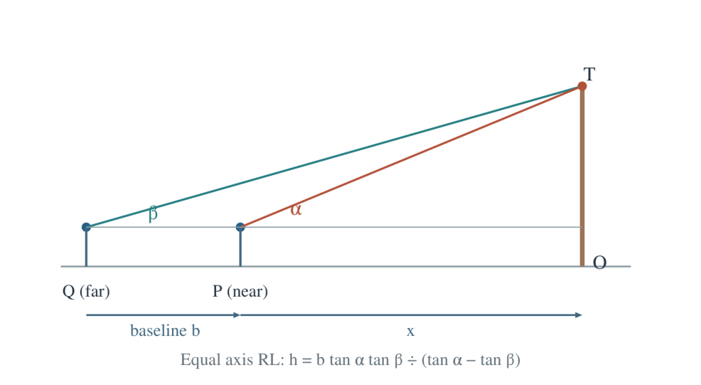
Plan section Q–P–O: P is nearer, baseline QP = b, PO = x, and both instrument axes are assumed at the same RL.
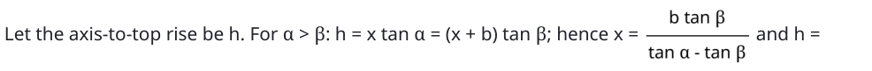
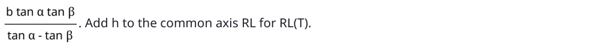
Illustration: for the first case, RL(A) = 100 m, i = 1.5 m, D = 80 m and α = 30° give RL(T) = 100 + 1.5 + 80 tan 30° = 147.688 m.
Limit: the second formula requires equal instrument-axis RLs and the displayed station arrangement. For unequal axes, write a separate RL equation at each station.
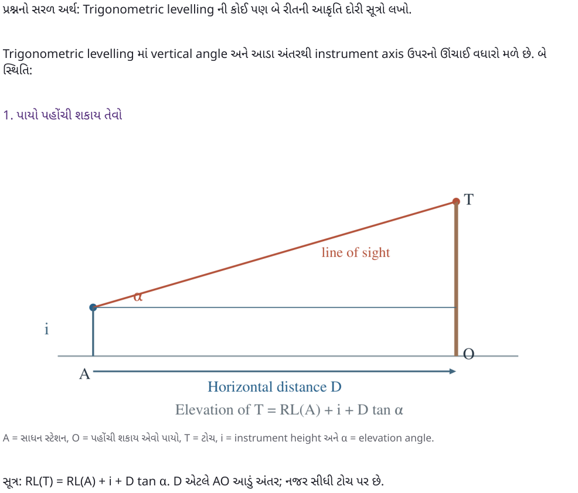
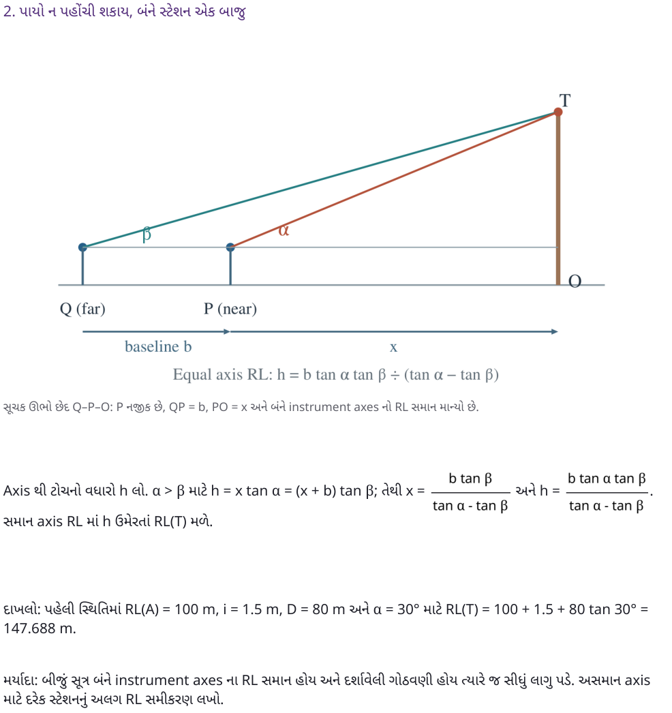
Q.3 (c) · Following observation are made to find the RL of top of tower Instrument station Staff reading B.M (M) Vertical angle Remark P 1.510 +14˚30’ Q 0.635 +11˚42’ RL OF BM IS 5.550M Instrument station P, Q and tower are in same vertical plane. The distance PQ=30.00M · 7 marks
The paper says only that P, Q and the tower lie in the same vertical plane; it does not say whether the tower is beyond the two stations or between them. Thus the numerical answer is not unique. Both arrangements below satisfy the observations.
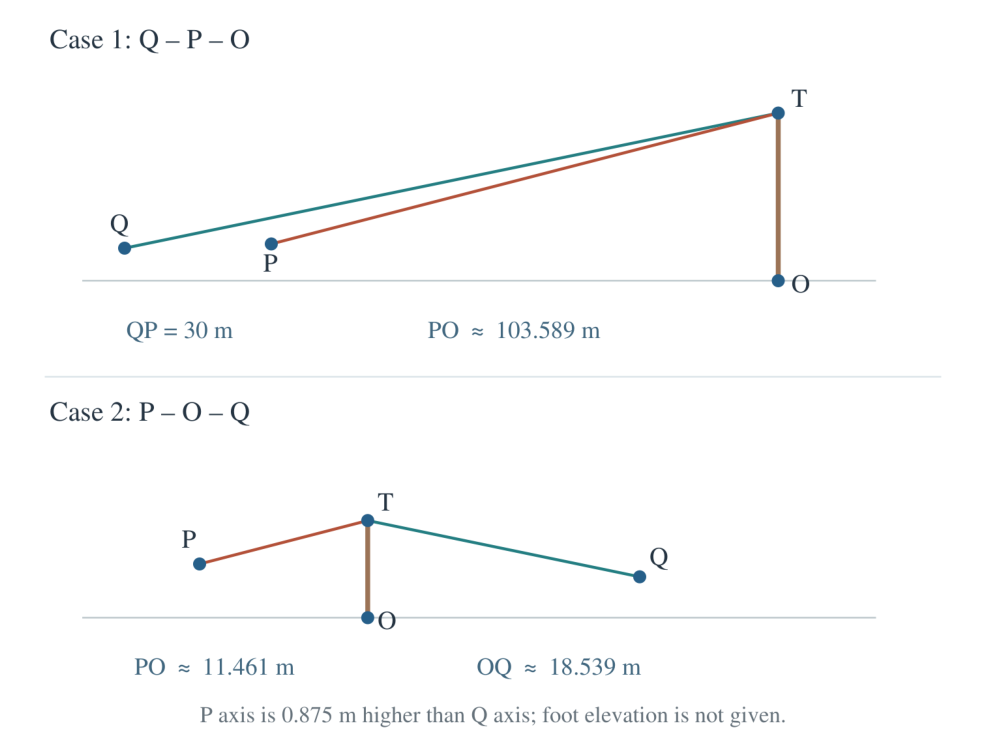
T is the top and O its vertical projection at the foot. Red sight is from P; teal sight is from Q. The two cases use different scales; the foot RL is not given.
Given and assumptions
RL(BM) = 5.550 m
BM readings: P = 1.510 m; Q = 0.635 m
α at P = +14°30′; β at Q = +11°42′; PQ = 30.00 m
Assume 30 m is horizontal; the given BM readings establish the instrument-axis RLs; sights are to the top. Ignore long-sight corrections.
1. Axis RL at P = 5.550 m + 1.510 m = 7.060 m.
2. Axis RL at Q = 5.550 m + 0.635 m = 6.185 m.
3. tan 14°30′ = 0.25861758; tan 11°42′ = 0.20709004.
Case 1 — Q–P–tower on one side
Let x be the horizontal distance from P to the tower foot. Then the Q distance is x + 30 m.
1. RL(T) = 7.060 m + x tan 14°30′.
2. RL(T) = 6.185 m + (x + 30 m) tan 11°42′.
3. Equating and rearranging: x (0.25861758 − 0.20709004) = 30 m × 0.20709004 − 0.875 m.
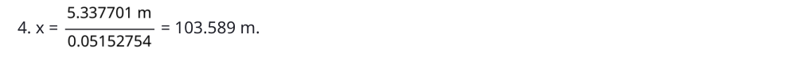
5. RL(T) = 7.060 m + 103.589 m × 0.25861758 = 33.850 m.
Case 2 — P–tower–Q, tower between the stations
Let x be the P-to-foot distance. The Q-to-foot distance is 30 m − x.
1. RL(T) = 7.060 m + x tan 14°30′.
2. RL(T) = 6.185 m + (30 m − x) tan 11°42′.
3. Equating and rearranging: x (0.25861758 + 0.20709004) = 30 m × 0.20709004 − 0.875 m.
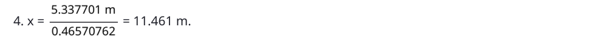
5. RL(T) = 7.060 m + 11.4615 m × 0.25861758 = 10.024 m.
RL(T) ≈ 33.850 m if Q–P–tower; ≈ 10.024 m if P–tower–Q. Arrangement is needed for one answer.
Check: Q distances are 133.589 m and 18.539 m respectively; substitution in the Q equation gives the same top RL in each case. An arrangement with the tower beyond Q is inconsistent with these positive distances and axis levels.
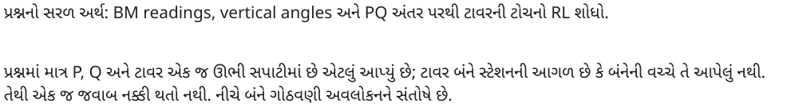
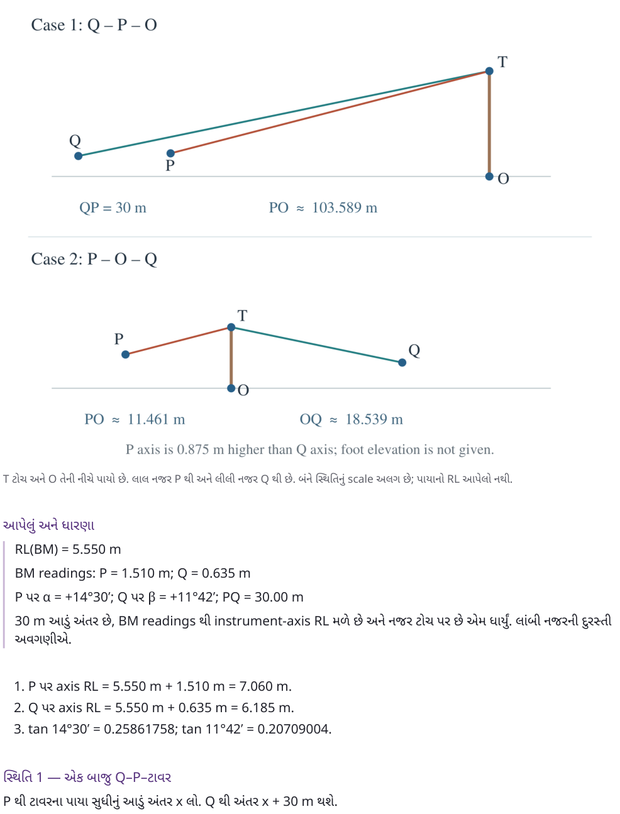
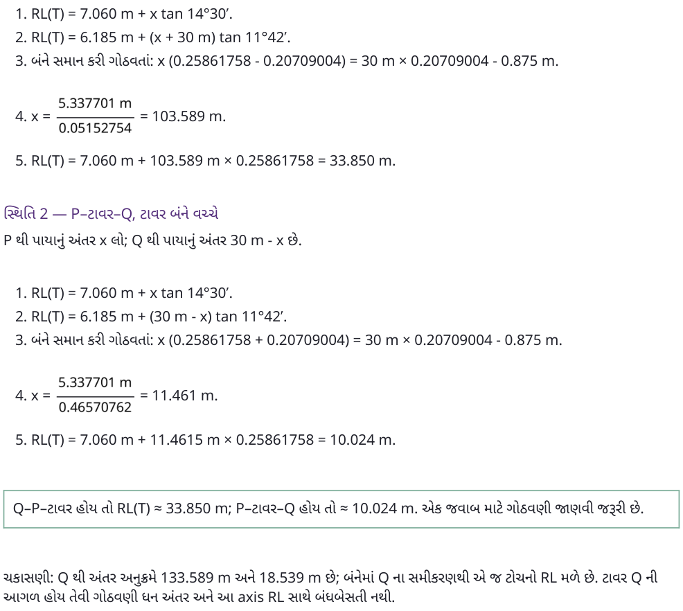
Q.3 (a) · In which situations tacheometric survey is useful. · OR · 3 marks
Tacheometry is especially useful where rapid optical distance and elevation measurements are preferable to direct chaining.
• Steep hills, valleys, rough or broken ground where taping is slow.
• Across a river, ditch or obstruction when the staff station is visible.
• Rapid contouring, topographic detail and preliminary route surveys.
Example: take many staff sights to map a hillside; line of sight and an accessible staff position are still required.
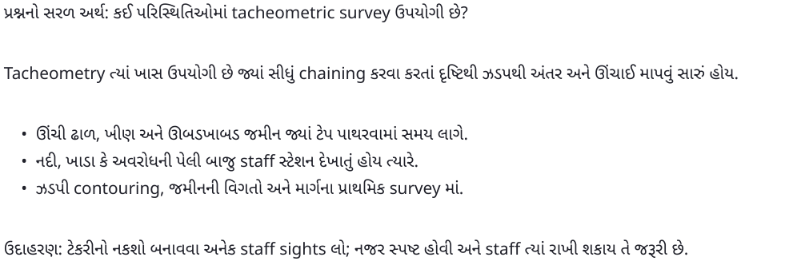
Q.3 (b) · Derive the expressions for trigonometric leveling while Based of object inaccessible, instrument stations not in the same vertical plane as the elevated object. · OR · 4 marks
When the base O is inaccessible and stations A and B are not in the same vertical plane as the top T, first solve the horizontal plan triangle AOB. The projection of T is O; horizontal angles can be sighted to T even if O is inaccessible.
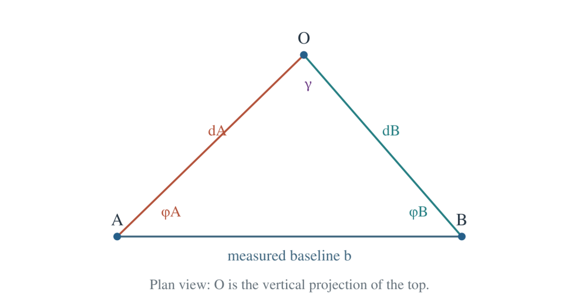
Plan view: A and B are instrument stations; O is directly below the top T. φA and φB are horizontal angles, γ is the angle at O.
Assumptions and derivation
• AB = b is a measured horizontal baseline; A, B and O are non-collinear; φA and φB are interior horizontal angles.
• α is the signed vertical angle at A to the actual top, iA is the instrument-axis height, and RL(A) is known. Ignore long-sight corrections in this basic expression.
1. By the angle sum of triangle AOB: γ = 180° − φA − φB.
4. The rise from the A instrument axis to T is h = dA tan α.
5. Therefore RL(T) = RL(A) + iA + dA tan α.
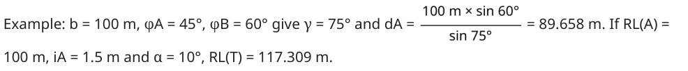
Limit: a nearly flat plan triangle or poor angle intersections magnify error; take independent checks and apply appropriate long-sight corrections.
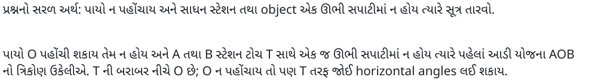
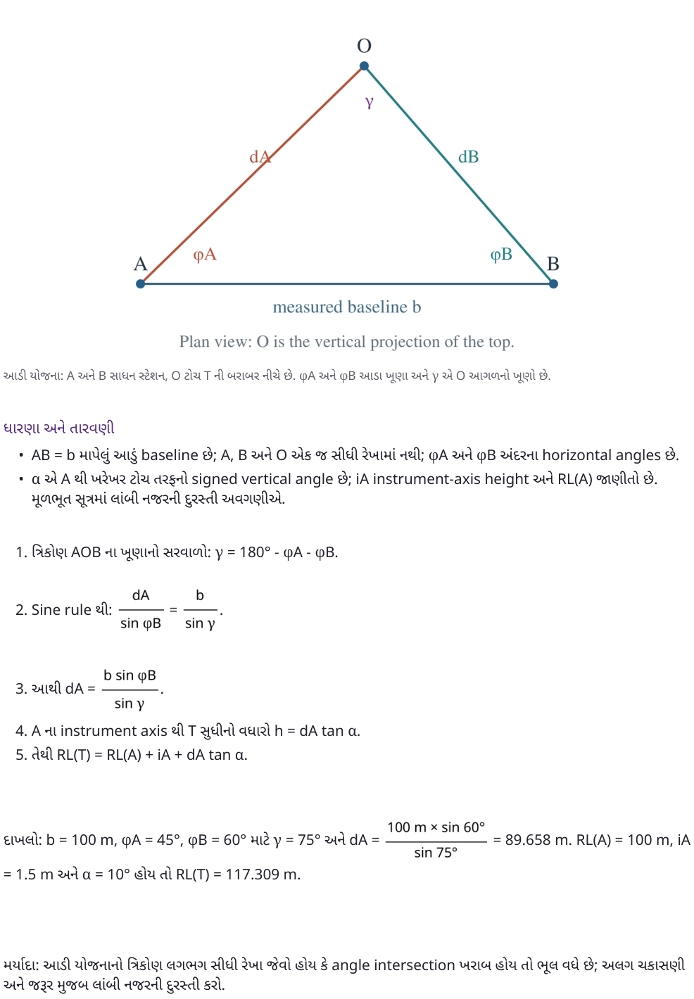
Q.3 (c) · Following observations were made with a tacheometer having constant 100 and 0.40 from instrumental station A. Staff station Angle Staff reading Remark B.M -2˚18’ 3.225, 3.55, 3.875 R L OF BM 207.655M B +8˚36’ 1.650, 2.515, 3.380 Find RL of B and distance AB. · OR · 7 marks
For a vertical staff and an inclined central sight, use the signed angle θ from the horizontal. The vertical rise V is from the instrument axis to the point cut by the middle hair.
Given and formulae
K = 100; C = 0.40 m; RL(BM) = 207.655 m
BM: θ = −2°18′; staff readings = 3.225, 3.550, 3.875 m
B: θ = +8°36′; staff readings = 1.650, 2.515, 3.380 m
D = K s cos²θ + C cos θ
V = K s sin θ cos θ + C sin θ
RL(staff station) = RL(axis) + V − middle reading
Step-by-step solution
1. BM staff intercept sBM = 3.875 m − 3.225 m = 0.650 m.
2. VBM = 100 × 0.650 m × sin(−2°18′) × cos(−2°18′) + 0.40 m × sin(−2°18′).
3. VBM = −2.622518 m.
4. RL(axis) = 207.655 m + 3.550 m − (−2.622518 m) = 213.827518 m.
5. B staff intercept sB = 3.380 m − 1.650 m = 1.730 m.
6. DAB = 100 × 1.730 m × cos²(8°36′) + 0.40 m × cos(8°36′).
7. DAB = 169.527081 m.
8. VB = 100 × 1.730 m × sin(8°36′) × cos(8°36′) + 0.40 m × sin(8°36′).
9. VB = +25.638560 m.
10. RL(B) = 213.827518 m + 25.638560 m − 2.515 m = 236.951078 m.
Horizontal distance AB ≈ 169.527 m; RL(B) ≈ 236.951 m
Check: the BM rise is negative because its angle is a depression; the B rise is positive. Staff readings are in metres and the additive constant is a length.
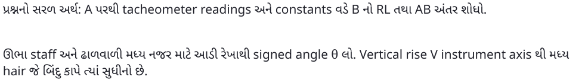
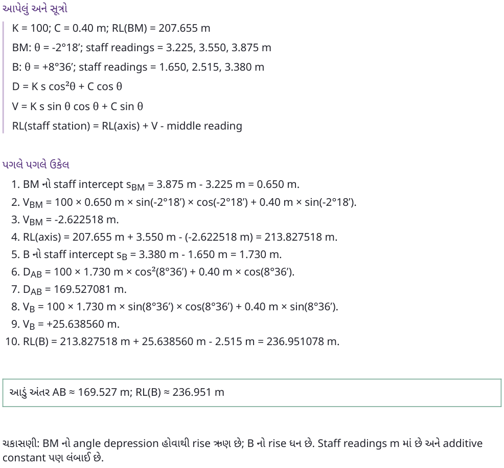
Question 4
Q4 · Circular curves and obstacles
Q.4 (a) · Define (1) Point of intersection (2) Point of curve (3) Tangent point . · 3 marks
On a simple circular curve, two straight tangents are joined by one circular arc:
1. Point of intersection (PI): where the two straight tangents, extended if necessary, meet.
2. Point of curve (PC or T₁): where the incoming tangent ends and the circular curve begins.
3. Tangent point (PT or T₂): where the circular curve ends and the outgoing tangent begins.
Example: on a road turning to the right, the arc runs from PC to PT; PI is generally not on the arc.
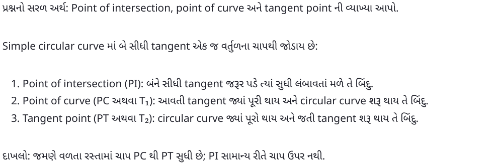
Q.4 (b) · Determine Length of long chord, External distance and Mid Ordinate. Take deflection angle 150º and radius of curve 300 M. · 4 marks
For a simple circular curve, use the printed deflection angle Δ = 150°, not 15°. The long chord joins PC to PT; E is the distance from PI to the curve along the angle bisector, and M is the offset at the long-chord midpoint.
Given
R = 300 m
Δ = 150°
Step-by-step solution
2. Long chord L = 2R sin δ.
3. L = 2 × 300 m × sin 75° = 579.555 m.
4. External distance E = R (sec δ − 1).
5. E = 300 m × (sec 75° − 1) = 859.111 m.
6. Middle ordinate M = R (1 − cos δ).
7. M = 300 m × (1 − cos 75°) = 222.354 m.
Long chord = 579.555 m; external distance = 859.111 m; middle ordinate = 222.354 m
Check: the long chord is below the 600 m diameter and M is below the 300 m radius. This is a very large deflection, so E is large.
Q.4 (c) · Explain with sketch two theodolite method of setting out a simple curve. · 7 marks
The two-theodolite method sets out points on a simple circular curve by intersection of two angular sights; individual chord lengths need not be measured on the ground. By the tangent–chord theorem, the shown angles δ are equal.

At T₁ use the tangent T₁–PI as reference; at T₂ use the long chord T₂–T₁. For the same point P both angles are δ, turned toward the arc. Schematic, not to scale.
Setup — part and purpose
1. Compute curve elements, locate tangent points T₁ and T₂, and make both points and the curve area intervisible.
2. Set, centre and level one theodolite at each tangent point; use ranging rods or prisms to mark points and communicate between observers.
3. Prepare the deflection δ for each point from T₁. For the known chord c = T₁P and radius R, δ =
subchords.
Working — step and reason
1. At T₁ orient to PI along the tangent; turn the calculated δ toward the curve and clamp the sight.
2. At T₂ orient to T₁ along the long chord; turn the same δ toward the curve and clamp the sight. The tangent–chord theorem makes this angle equal to the first.
3. Move the rod or prism until it is on both sight lines. Their intersection is P; mark and record it. Repeat for each computed deflection.
4. Check the last point and tangent, instrument orientations, point spacing and closure against the calculated curve; repeat any doubtful sight.
Illustration: if the total central deflection is 60°, the mid-arc point has a central angle of 30° from T₁, so both the shown angles are δ = 15°.
Not suitable unchanged if either sight is blocked or the point itself cannot be occupied; use an appropriate alternative survey method.
Q.4 (a) · Write short note on Horizontal curve. · OR · 3 marks
A horizontal curve is a curve in plan that connects alignments of different horizontal directions to provide a gradual change of direction.
• A simple circular curve has one constant radius; compound and reverse curves combine circular arcs.
• A transition curve gradually changes curvature between a straight and a circular curve.
• Curve choice depends on design speed, terrain, sight distance and applicable standards.
Example: a circular road bend joins two tangents instead of turning abruptly at their intersection.
Q.4 (b) · Calculate the co-ordinates of a curve having long chord of 100M and mid-ordinate 6.0M, For the interval 10.0M · OR · 4 marks
Assume a simple circular curve. Take x along the 100 m long chord from one end and y perpendicular to the chord toward the arc; calculate coordinates at 10 m intervals of x.
Long-chord coordinate convention: x measured from the left endpoint along the chord; ordinates y are perpendicular to it. Schematic, not to scale.
Given and solution
Long chord L = 100 m; middle ordinate M = 6 m
Half chord = 50 m; interval along chord = 10 m
1. From the right triangle at the chord midpoint: (R − M)² + (50 m)² = R².
4. Distance from centre to chord = R − M = 205.333333 m.
5. At distance x from the left endpoint: y = √[R² − (x − 50 m)²] − (R − 6 m).
6. For x = 10 m: y = √[(211.333333 m)² − (10 m − 50 m)²] − 205.333333 m.
7. y = 2.179986 m ≈ 2.180 m.
Coordinates: x along chord, y toward curve
Coordinates above in metres; radius ≈ 211.333 m
Check: offsets are zero at both ends, 6 m at the middle and symmetric about x = 50 m. These are exact circular ordinates rounded to 0.001 m; equal arc intervals would be a different convention.
Q.4 (c) · List out various obstacles which may come across while setting out a circular curve, Explain any one in detail. · OR · 7 marks
An obstacle in curve setting-out prevents direct measurement, a required line of sight, or access to a planned point. First identify what is blocked, because each case needs a suitable method.
Possible obstacles
• Chaining a chord is obstructed by fencing, a ditch or rough ground.
• The tangent intersection PI or a tangent point cannot be occupied.
• T₁ and T₂ are not mutually visible, or an intermediate curve point is hidden from a station.
• A planned point falls in water, traffic or an otherwise unsafe or inaccessible area.
One case in detail — chord cannot be taped, sights remain clear
T₁ and T₂ are accessible and mutually visible, and the selected curve points can be safely occupied. The obstruction prevents taping the chord, not the angular sights.
1. Reconnoitre the obstacle. Confirm that both tangent points and every point to be marked are accessible and visible from both theodolites; obtain permission and protect the work area.
2. Compute the radius, tangent points, long-chord reference and cumulative deflections for the required points. Set and level instruments at T₁ and T₂.
3. Orient T₁ to PI on its tangent and T₂ to T₁ on the long chord. For each P turn the same computed δ toward the curve at each instrument.
4. Guide a rod to the intersection of the two sights and peg P. This avoids stretching a tape through the obstruction.
5. Repeat for the other points and check the terminal point, tangent, orientations and curve dimensions; record any discrepancies and resurvey if outside tolerance.
Example and limit: a fence may prevent a direct chord tape while safe sight lines and an access route to P exist. If a sight is blocked or P lies in water, this method alone cannot mark it; adopt a suitably designed offset or alternative method.
Question 5
Q5 · Total station, EDM, GPS and campus survey
Q.5 (a) · Define Total station and give the function of any three parts. · 3 marks
A total station combines an electronic theodolite, electronic distance measurement and a processor to observe angles and distances and calculate positions.
1. Telescope: sights and focuses the prism or target.
2. EDM unit: measures distance using an electromagnetic signal.
3. Display and processor: show readings and compute or store survey coordinates.
Example: survey building corners for a campus plan.
Q.5 (b) · Write the full form of ATR and Explain ATR. · 4 marks
ATR = Automatic Target Recognition. On a supported total station, it automatically recognises a suitable target or prism in the telescope field and assists precise pointing.
How it works
1. The operator approximately points toward a supported prism and activates ATR.
2. The instrument detects the returned target signal and estimates how far the target image is from the sight axis.
3. Servomotors adjust horizontal and vertical pointing to centre the target; the instrument can then take and record the measurement according to its settings.
Example: rapidly aim at a prism on a campus detail point. Limit: clear sight, a suitable target and instrument support are needed; automatic following of a moving target is a separate tracking mode, not implied by ATR alone.
Q.5 (c) · Write the advantages and disadvantages of Total station. · 7 marks
A total station combines electronic angle measurement, EDM and computation; the choice should balance speed against cost and field conditions.
Advantages
1. Rapidly measures horizontal and vertical angles and slope distance from one setup.
2. Computes horizontal distance, elevation difference and coordinates using entered station and target data.
3. Stores point numbers, codes and observations digitally, reducing manual booking and transcription.
4. Transfers data to surveying or CAD software for plotting and further checking.
5. Supports setting-out, traverses, topographic detail and area calculations when the instrument has the required functions.
6. Can achieve good repeatability with calibrated equipment, careful setup and suitable survey procedure.
Disadvantages
1. Purchase, maintenance, calibration and trained operators cost more than basic instruments.
2. Batteries and electronics require charging and protection from moisture and damage.
3. Line of sight is necessary; obstacles and very poor visibility prevent observations.
4. Wrong instrument height, prism height, coordinates, orientation or point codes can spoil otherwise precise data.
5. Accuracy is affected by instrument calibration, centring, atmospheric conditions and reflector settings.
6. Stored data still need independent field checks, backups and correct processing; automation does not guarantee a correct plan.
Application: rapidly map a college campus, closing the traverse and checking selected points before drawing.
Q.5 (a) · Define EDM and give its 2 functions. · OR · 3 marks
EDM (Electronic Distance Measurement) determines distance using an electromagnetic signal sent to a target and received back, with the instrument interpreting travel time or phase according to its design.
1. Function 1: measure slope distance between the instrument and a suitable target or reflector.
2. Function 2: supply the distance observation for horizontal-distance and coordinate calculations when combined with angle data.
Example: measure the distance from a total station to a prism.
Q.5 (b) · Write the segments of GPS. · OR · 4 marks
GPS (Global Positioning System) has three interacting segments:
Example: a campus survey receiver uses signals from normally at least four satellites for a 3D position and receiver-clock solution. Limit: obstructions and multipath reduce signal quality; survey- grade accuracy may require corrections and appropriate procedures.
Q.5 (c) · how will you prepare a field work for preparation of drawing of your polytechnic campus in total station? · OR · 7 marks
A total-station campus survey measures a checked control framework and coded detail points, then processes them into a scaled drawing. Plan the field work before collecting points.
Schematic campus plan: A–B–C–D–A is a closed control traverse; dashed lines show detail sights to building corners. Actual station locations depend on visibility and access.
Setup — equipment and purpose
• Total station, tripod, tribrach and plumb: centred, level angle and distance observations.
• Prism and pole: sightable targets, with measured prism height; tape: check heights and short dimensions.
• Field book or data logger, charged batteries, spare storage and marking pegs: identify and preserve observations.
Working — step and reason
1. Obtain campus permission and define boundary, drawing scale, required accuracy, coordinate system and vertical datum. Reconnoitre buildings, roads, drains, utilities, hazards and sight lines.
2. Choose stable, mutually visible control stations around the site. Establish coordinates and benchmark RL from known control, or state a local assumed datum if georeferencing is not required.
3. Measure a closed traverse A–B–C–D–A; centre and level at each station. Enter verified station coordinates, instrument height and backsight coordinates or known orientation. Observe angles and distances, preferably with face checks.
4. Set the prism height correctly and record point IDs and feature codes. Survey building corners, paths, kerbs, road edges, fences, trees, drainage, spot levels and other required features from suitable control stations.
5. For hidden or obstructed points, use an additional checked setup or correctly measured offset; never invent inaccessible measurements. Record a field sketch and connections so the office can join points correctly.
6. Close and check the traverse, compare angular and coordinate misclosures with the specified tolerance, reobserve if needed and adjust by an appropriate method. Check a few independently measured distances or repeated points.
7. Back up raw observations, export the data, process and plot a scaled CAD drawing with legend, north direction, datum, point codes and levels; inspect the drawing against field notes.
Illustrative coordinate check
Station S: E = 1000 m, N = 1000 m
Horizontal distance D = 20 m; azimuth = 90° clockwise from north
1. E(point) = 1000 m + 20 m × sin 90° = 1020 m.
2. N(point) = 1000 m + 20 m × cos 90° = 1000 m.
Example point: E = 1020 m, N = 1000 m
Limit and safety: clear sight and access are needed; line-of-sight, centring, prism height and wrong codes can cause errors. Control traffic and avoid unsafe or restricted areas.